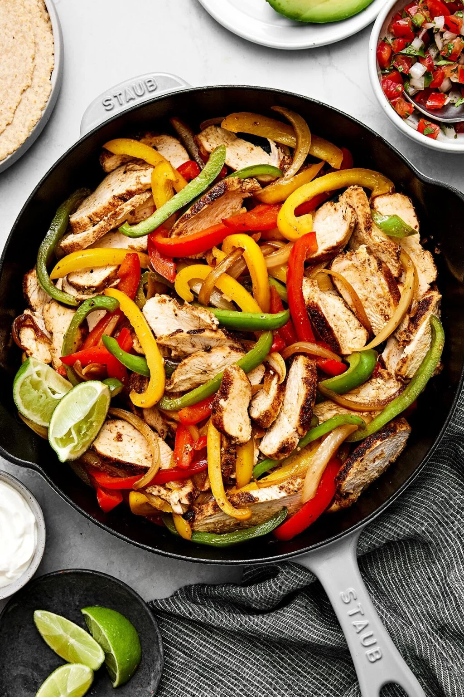

back to home
Fajitas

Description
Fajitas are a food from my childhood. I don't know
that my idea of fajitas closely matches anyone elses.
in this case, what I mean a mixture of chicken and
veggies put in a tortilla with cheese and salsa.
Because many people don't seem to know how to make
a tortilla wrap, I'm including a tutorial here.
First, collect the fillings into a line in the center
of the tortilla. Leave space at one end of the tortilla.
If you want to do a burrito wrap, leave space at both
ends. Fold the end of the tortilla that you left space
on. It should cover a portion, usually less than half,
of the fillings. Turn the tortilla 90 degrees, fold up
the end cloest to you, so that the fillings sit right in
the crease. From there, you can simply roll the tortilla
to take up the excess.
Recipe
Ingredients
- 1 pack of 10 inch tortillas
- 2 medium chicken breasts
- 1 red pepper
- 1 green pepper
- 1 onion
- 1 pack of fajita seasoning (or make your own)
- shredded cheese
- salsa
Instructions
- start by julienning your onions and peppers
You can dice them instead, but I prefere my peppers to
be long in my fajitas.
- In a 12 inch skillet, start heating some oil
a ten inch may also work, but the more area in the pan,
the more likely you'll be able to properly brown your
chicken.
- Once hot, throw in your veggies
You're not aiming to cook the peppers and onions to
completion, they'll finish cooking when you put the
chicken in.
- Cut your chicken breasts into narrow strips
If you desire a strip with a slightly more square
cross section, I'd recomend butterflying the breast.
- Put your chicken in the pan with your vegetables.
Make a space in the center of the pan, adding a little
oil, so that the chicken can make good contact with the
pan. Make sure the pan is good and hot. You have a
limited time to get any browning on the chicken before the
water squeezes out and prevents the pan from getting hotter
than 200 degrees.
- Continue cooking until chicken is cooked through
the pieces will probably be too thin to put a thermometer on,
but if you cut open your largest piece, and there's no pink
left, you can trust that your other pieces are also cooked
through
- Add in the seasoning
If any seasoning gets stuck to the bottom of the pan, you can
deglaze with 1/4 cup of water. This will also help the seasoning
to mix more evenly into your fajita mixture. No thickeners are
needed
- Remove from heat and serve
Take the pan off the heat, and scoop some filling into your
tortilla. You can heat the tortilla for 15 seconds in the
microwave or 30 seconds in a hot pan to make it more pliable.
Add cheese and salsa to taste and wrap.